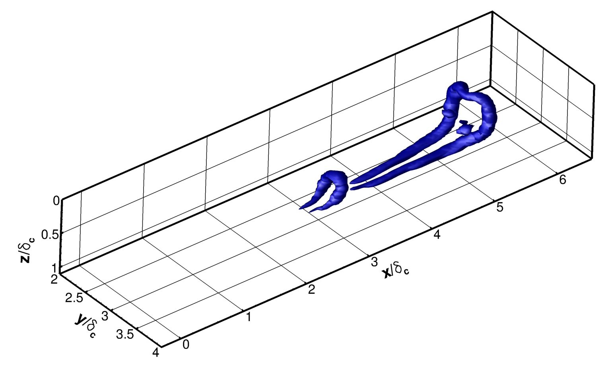

Chasing hairpin packets in turbulent boundary layers
This project involved using statistical and geometrical tools to develop a tool for identifying and tracking "hairpin" vortex packets in direct numerical simulation (DNS) data of hypersonic turbulent boundary layers. The 2-point correlation between wall shear stress and momentum was analyzed to find a characteristic packet "wall signature" (c.f. Brown and Thomas, Phys. Fluids 20, pp. 234–252, 1977). This wall signature was combined packet-finding algorithm of Ringuette, Wu and Martin (J. Fluid Mech., 594, 59–69, 2008.) based on average packet geometry to create a tool for identifying hairpin packets in turbulent boundary layer DNS. Using the object segmentation and feature tracking tools developed by Wang and Silver (IEEE Trans. on Vis. and Computer Graphics, v.3 n.2, p.129-141, 1997) we developed a tool for tracking hairpin packets through multiple frames on DNS data in order to study their evolution and role in the formation of new packets.
